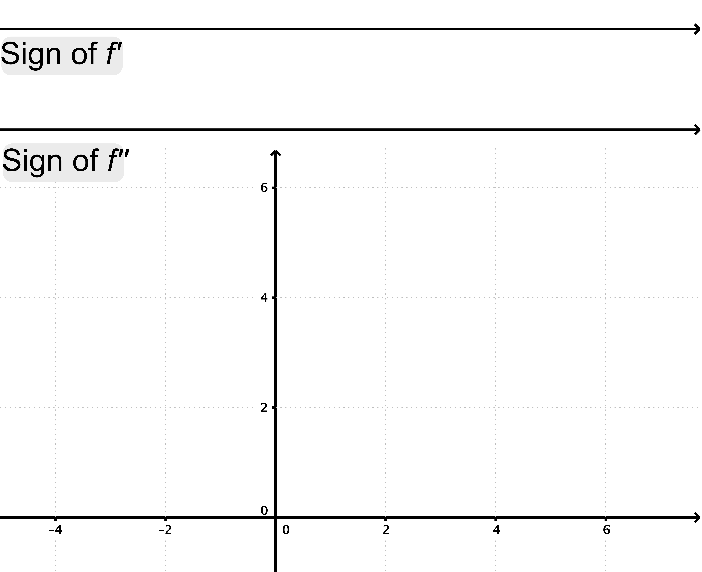
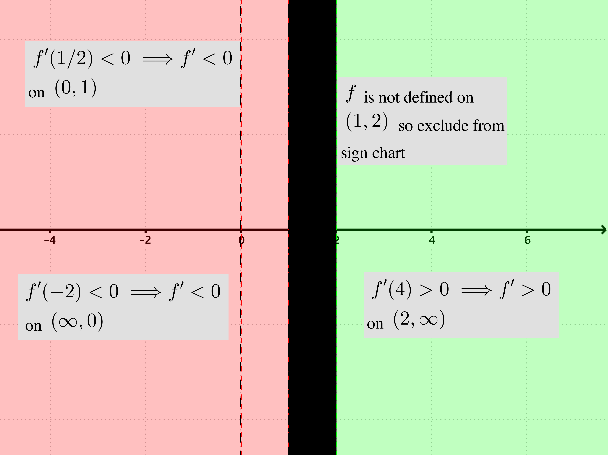
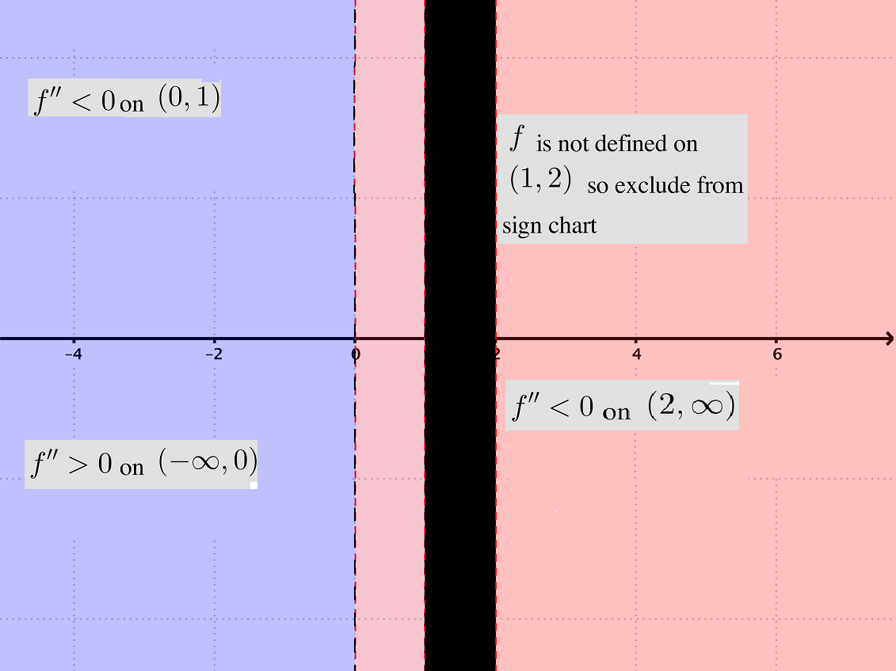

- (a)
- Find the domain of \(f\).
- (b)
- Show that \(f'(x) = -\ln (x^2+1)\) on the interval \((-\infty , 1)\). For \(x < 1\) we have\begin{align*} f'(x) &= 2 - \frac {2}{1+x^2} - \ln (x^2+1) - x \cdot \frac {1}{x^2+1}\cdot 2x\\ &= 2 - \frac {2}{1+x^2} - \ln (x^2+1) - \frac {2x^2}{x^2+1}\\ &= 2 - \frac {2 + 2x^2}{x^2+1} - \ln (x^2+1)\\ &= 2 - 2\cdot \frac {1+x^2}{x^2+1} - \ln (x^2+1)\\ &= 2 - 2 - \ln (x^2 +1) = -\ln (x^2+1) \end{align*}
- (c)
- Compute a formula for \(f'\) on the interval \((2, \infty )\).
- (d)
- Compute a formula for \(f''\) on the interval \((-\infty , 1)\).
- (e)
- Compute a formula for \(f''\) on the interval \((2, \infty )\).
- (f)
- List all the asymptotes (with limit justifications, if appropriate). (If \(f\) does not
have a particular asymptote write “NONE”.)
- (i)
- Vertical asymptotes: NONE: For \(x \ge 2\), \(f(x)=\sqrt {x - 2}\) so no vertical asymptotes there. For \(x \le 1,\ f(x)= 2x - 2\tan ^{-1}(x) - x \ln (x^2+1)\) and we can look at each term. The term \(2x\) is a polynomial. The term \(- 2\tan ^{-1}(x)\) is bounded. Finally, the term \(- x \ln (x^2+1)\). We would be concerned about where \(x^2+1=0\) but that never happens because of the squared term.
- (ii)
- Horizontal asymptotes: No H.A. as \(x \to \infty \):\begin{align*} \lim _{x\to \infty } f(x) &= \lim _{x \to \infty } \underbrace {\sqrt {x-2}}_{\text {form $\infty $}} = \infty \end{align*}
No H.A. as \(x \to -\infty \):
\begin{align*} \lim _{x \to -\infty } f(x) &= \lim _{x \to -\infty } (2x - 2\tan ^{-1}(x) - x \ln (x^2+1))\\ &= \lim _{x \to -\infty } \left [x\cdot (2 - \ln (x^2+1)) - 2\tan ^{-1}(x)\right ]\\ &= \lim _{x \to -\infty } \left [x \cdot (2 + \ln (x^2+1)^{-1} -2\tan ^{-1}(x) \right ]\\ &= \lim _{x \to -\infty } \left [\underbrace {x}_{\text {$\to -\infty $}} \cdot \left (2 + \ln \left (\underbrace {\frac {1}{x^2+1}}_{\text {$\to 0$}}\right )\right ) -2\underbrace {\tan ^{-1}(x)}_{\text {$\to -\pi /2$}} \right ]\\ &= \lim _{x \to -\infty } \left [\underbrace {x}_{\text {$\to -\infty $}} \cdot \left ( 2 + \underbrace { \ln \left (\frac {1}{x^2+1}\right )}_{\to -\infty }\right ) -\underbrace {2\tan ^{-1}(x)}_{\text {$\to -\pi $}} \right ]\\ &= \infty \end{align*}
- (g)
- In the following sign chart for \(f'\), list the points (in the domain of \(f\)) where \(f'(x) = 0\) or \(f'(x)\) is
undefined, indicate the sign of \(f'\) on each subinterval, and identify any local
extrema (with “local max” or “local min”.) In the following sign chart for \(f''\), list
the points (in the domain of \(f\)) where \(f''(x) = 0\) or \(f''(x)\) is undefined, indicate the sign of \(f''\) on
each subinterval, and identify any inflection points. Use this information to
sketch a graph of \(f\) in the blank grid. (Be sure to indicate any \(x\)- or \(y\)-intercepts.)

Finding critical points of \(f\):For \(x < 1\) we have
\begin{align*} f'(x) = 0 &\iff -\ln (x^2+1) = 0 \\ &\iff \ln (x^2+1) = 0\\ &\iff x^2 + 1 = e^0 = 1\\ &\iff x = 0. \end{align*}Critical point at \(0\) when \(x < 1\).
For \(x > 2\) we have
\begin{align*} f'(x) = 0 &\iff \frac {1}{2\sqrt {x-2}} = 0 \end{align*}This last equation is never true. Hence no critical points when \(x > 2\).
Sign chart of \(f'\):

Using the sign chart above, we see that the sign of \(f'\) does not change at \(x=0\) and is therefore neither a maximum or minimum. So \(f\) does not have a local maximum or local minimum.
Using the sign chart above, we see \(f'\) is positive on \((2, \infty )\) and thus intervals where \(f\) is increasing: \((2, \infty )\)
Using the sign chart above, we see \(f'\) is negative on \((-\infty , 0)\), \((0, 1)\) and thus intervals where \(f\) is decreasing: \((-\infty , 0)\), \((0, 1)\).
Find candidates for inflection points:
For \(x < 1\) we have
\begin{align*} f''(x) = 0 &\iff \frac {-2x}{x^2+1} = 0\\ &\iff x = 0. \end{align*}So, \(x=0\) is a candidate for an inflection point.
For \(x > 2\) we have
\begin{align*} f''(x) = 0 &\iff \frac {-1}{4(x-2)^{3/2}} = 0 \end{align*}This last equation has no solution. Hence no candidates for inflection points when \(x >2\).
We need to determine the sign of \(f''\) on the intervals \((-\infty ,0), (0,1), (2,\infty )\).

\(f''\) changes sign at \(x=0\) so \((0,0)\) is an inflection point.
intervals where \(f\) is concave up: \((-\infty , 0)\)
intervals where \(f\) is concave down: \((0,1)\), \((2, \infty )\)
Final sketch of graph: